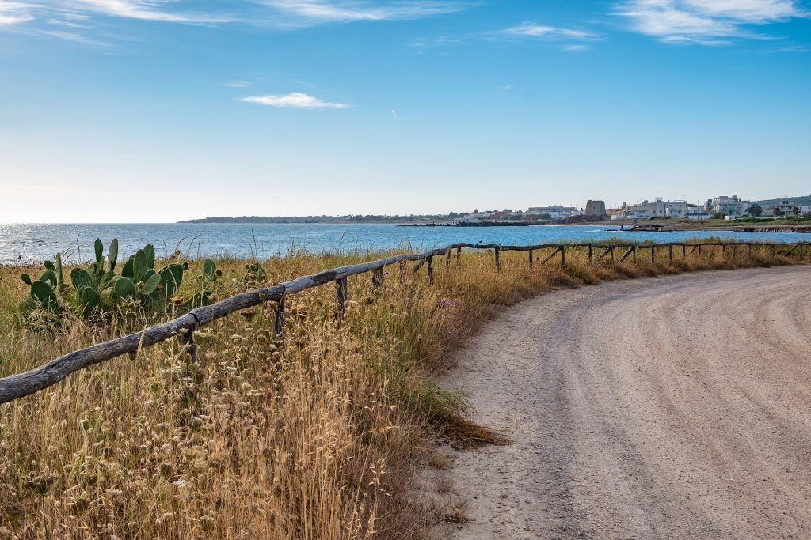
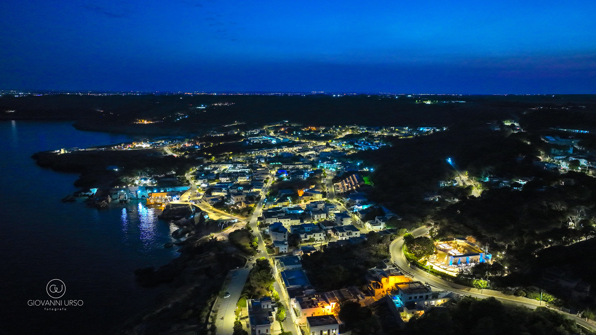

Cala dei Balcani è Salento
Baciato dal sole, cullato dal mare e accarezzato da una leggera brezza, il Salento è indubbiamente una delle mete turistiche più amate e ricercate. Situato nell’estremità inferiore della Penisola, questa lunga lingua di terra piatta lambisce due mari: a est l’Adriatico, a ovest lo Ionio.

Cala dei Balcani incarna tutte le caratteristiche della nostra terra
È un’immersione in un parco botanico
Con più di 500 piante autoctone della macchia mediterranea salentina
È una Torre Saracena del ’500
Con un panorama mozzafiato sul mare Adriatico e i Balcani all’orizzonte
È un mare blu cristallino
Circondato da una pineta di 500 anni, profumata di resina e salsedine
È una terrazza meravigliosa
Incastonata nella roccia salentina, con vista sull’orizzonte adriatico
È la Sala Cattedrale dell’’800
Costruita con il carparo delle cave locali, pietra leccese autentica
È il matrimonio nel Salento
Un giorno di vacanza in una delle regioni più belle del mondo
Il Mare Cristallino di Porto Miggiano
Santa Cesarea Terme è anche splendide spiagge e acque cristalline dove immergersi nella calura delle giornate estive. Incantevole la località di Porto Miggiano, una caletta rocciosa incastonata in un’insenatura caratterizzata da alte falesie calcaree e acque di un blu straordinario.
Decidere di organizzare un matrimonio in Salento significa regalarsi e regalare ai propri invitati un giorno di vacanza in una delle regioni più belle del mondo!
Cala dei Balcani incarna tutte queste caratteristiche: un luogo unico dove natura, storia e bellezza si fondono per creare esperienze indimenticabili.
Scopri la Location
Il Salento in Uno Sguardo


